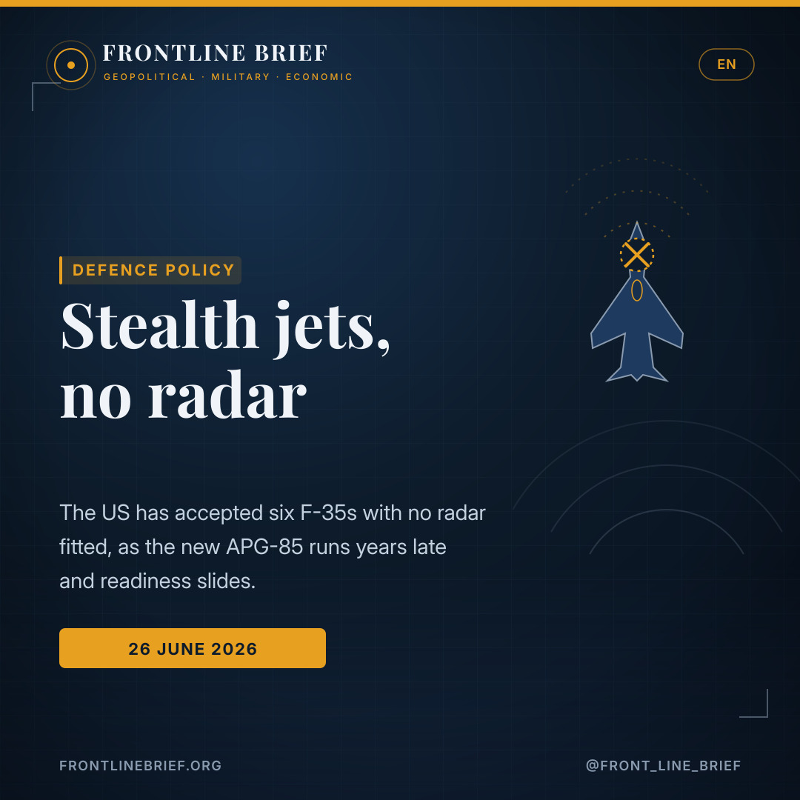
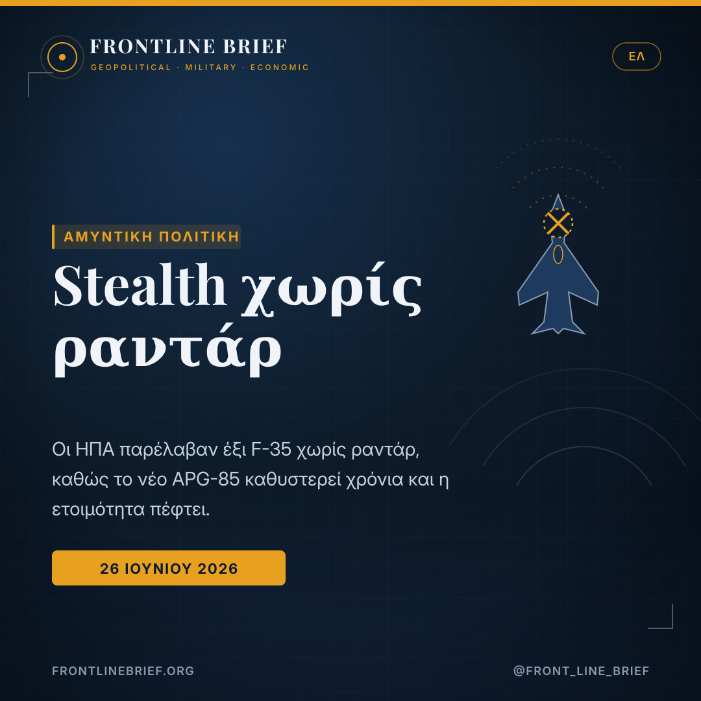
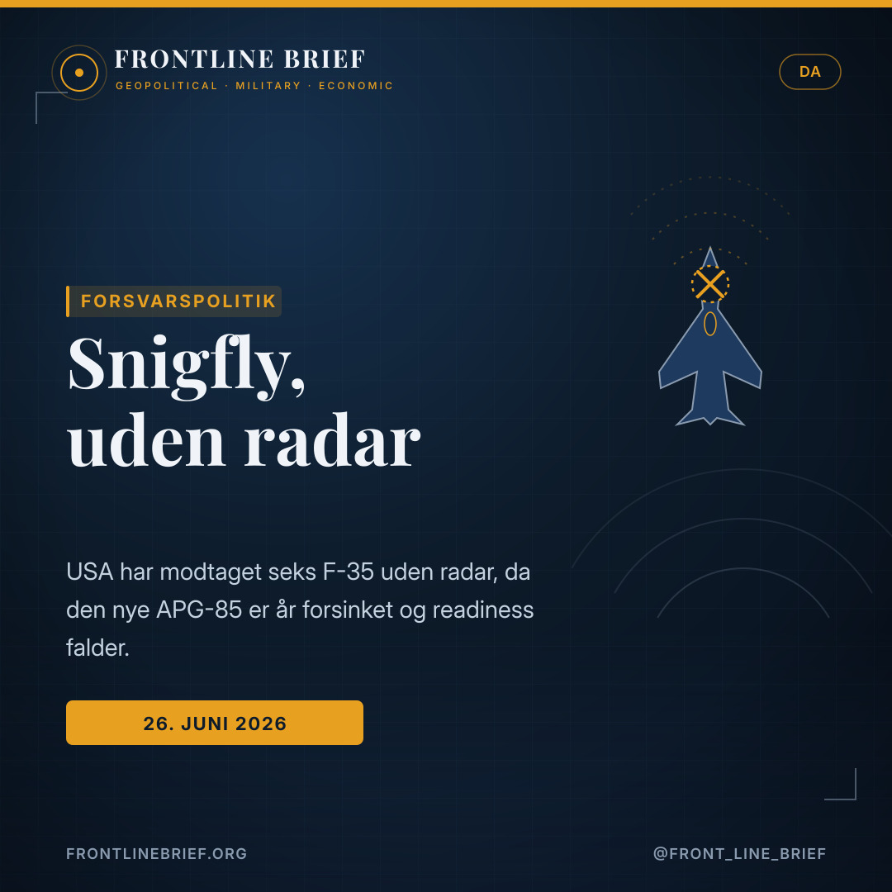
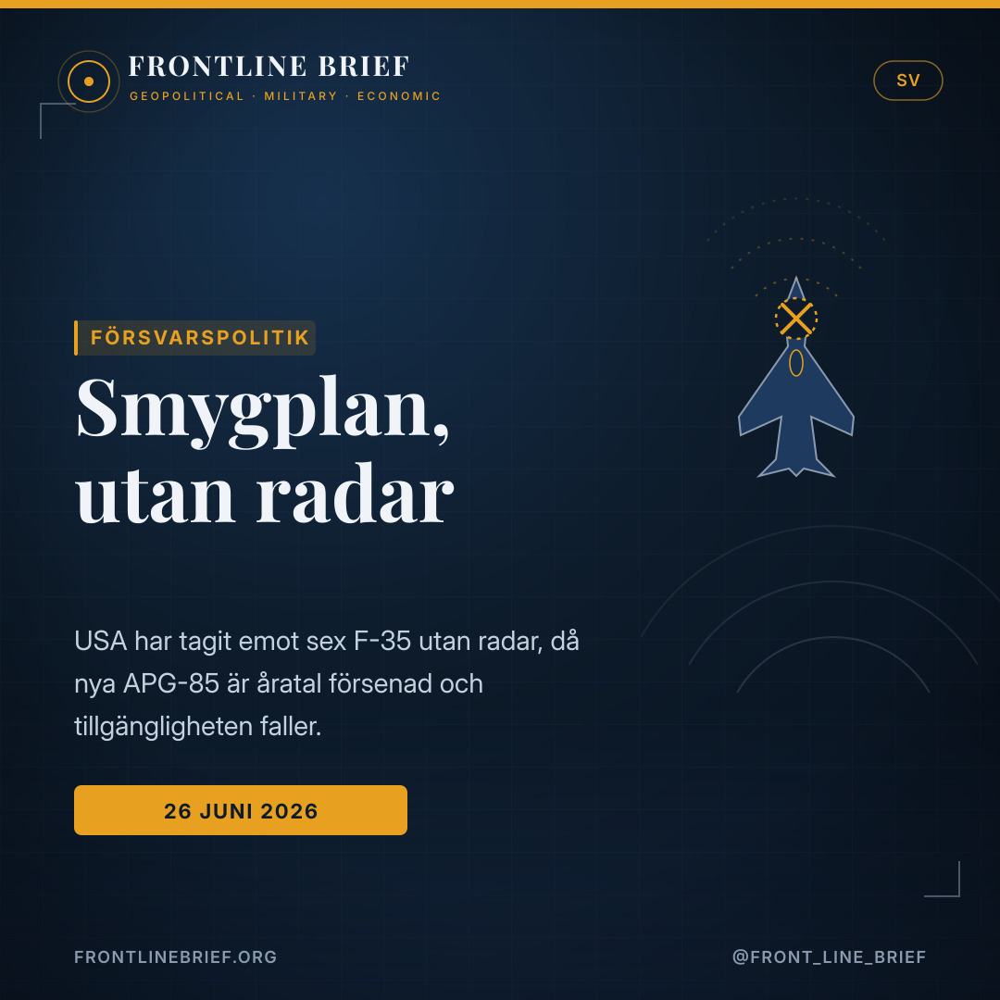

Stealth fighters, no radar: the US is accepting F-35s without their main sensor
The head of the F-35 programme has confirmed that the US Marine Corps has taken delivery of at least six Joint Strike Fighters with no radar fitted, because the new AN/APG-85 is running years late. It is a small number with an outsized meaning — a stealth jet built around sensor fusion, handed over missing the sensor that anchors it.




Six jets, no radar
F-35 Joint Program Office chief Lt. Gen. Gregory Masiello told the Senate Armed Services Committee the Marine Corps had accepted six aircraft "that do not have a radar installed," for want of the new APG-85 — and said he would not count them as fully mission capable.
The radar isn't ready
The AN/APG-85, built by Northrop Grumman as the centrepiece of the delayed Block 4 upgrade, is not due in production until around April 2028, at nearly $9m a unit. Its mounting hardware is not backwards-compatible with today's APG-81.
A fleet running colder
A GAO report says the average full-mission-capable rate across all F-35 variants fell from 38 to 25 percent between 2020 and 2025; the programme office claims higher but disputes the method. Cooling limits, spares shortages and a $2.1tn lifetime bill compound it.
Six jets, no radar
It is now official. The US military has confirmed accepting at least six F-35 Joint Strike Fighters for the Marine Corps with no radar installed. The head of the F-35 Joint Program Office, Lt. Gen. Gregory Masiello, disclosed the figure at a Senate Armed Services Committee hearing, in an exchange with Senator Mark Kelly of Arizona over the fleet's long-troubled readiness. Asked to confirm the Marines had taken jets with no radar, Masiello said six aircraft "that do not have a radar installed" had indeed been accepted, for want of the new sensor — and, pressed on whether such jets could be counted as fully mission capable, said he would not count them so.
Why the radar isn't ready
The gap is the delay in the AN/APG-85, the advanced active electronically scanned array being developed by Northrop Grumman as a centrepiece of the F-35's Block 4 upgrade. First production radars are not now expected before around April 2028, at a unit cost of nearly $9 million — and even that is an improvement on a previously worse schedule. A compounding problem is that the hardware used to mount the APG-85 is not backwards-compatible with the current AN/APG-81; a common mount has been floated, but not before Lot 20 jets arrive, around 2027 to 2028. So aircraft are rolling off the line built to accept a radar that has not yet turned up.
A stealth jet built around sensor fusion is being handed over missing the sensor that anchors it.
What a radarless F-35 can, and can't, do
Such a jet is not useless. Through the F-35's Multifunction Advanced Data Link, one aircraft without a radar can draw on the radar picture of another flying nearby, and its passive sensors and Link 16 feeds still give it situational awareness. But the limits are real. It cannot replace what the radar does, its survivability drops, and it leans heavily on radar-equipped wingmen who must then emit more — itself a vulnerability. Crucially, the radar is a major part of the jet's electronic-warfare suite: its ability to project narrow, powerful beams underpins electronic attack and self-defence, so a jet without one is diminished in the electromagnetic fight as well.
The readiness numbers behind it
The radar story sits inside a wider strain. A recent GAO report found the average full-mission-capable rate across all F-35 variants had fallen from 38 to 25 percent between 2020 and 2025; the programme office claims a higher figure and disputes the watchdog's methodology, but not the direction of travel. Thermal management is a persistent limiter: Block 4 needs about 32 kilowatts of cooling and the full APG-85 far more — Masiello put the forward requirement at 62 to 80 kilowatts against roughly 30 available today, conceding there is "no margin," with an engine-core upgrade not fielded until 2031. Spare-parts shortages and a headline lifetime programme cost of about $2.1 trillion round out the picture.
What it means for buyers like Greece
For now, the radarless jets are a US Marine Corps problem. Reports indicate foreign customers are not expected to be affected in the near term, because none are yet in line for APG-85-equipped aircraft; export F-35s, including those bound for Greece later this decade, are set to arrive with the mature APG-81. That is reassuring for Athens in the short run. But the deeper lessons travel: the Block 4 upgrade that every operator is counting on for future capability is years behind, cooling and power remain unresolved, and readiness is under scrutiny. For a first-time F-35 buyer, the value is real — but so is the reminder that this is a programme still working through significant growing pains.
Έξι μαχητικά, χωρίς ραντάρ
Είναι πλέον επίσημο. Ο αμερικανικός στρατός επιβεβαίωσε την παραλαβή τουλάχιστον έξι F-35 για το Σώμα Πεζοναυτών χωρίς εγκατεστημένο ραντάρ. Ο επικεφαλής του Κοινού Γραφείου Προγράμματος του F-35, αντιστράτηγος Γκρέγκορι Μαζιέλο, αποκάλυψε τον αριθμό σε ακρόαση της Επιτροπής Ενόπλων Δυνάμεων της Γερουσίας, σε διάλογο με τον γερουσιαστή Μαρκ Κέλι της Αριζόνα για τη χρονίως προβληματική ετοιμότητα του στόλου. Ερωτηθείς αν οι Πεζοναύτες παρέλαβαν μαχητικά χωρίς ραντάρ, ο Μαζιέλο είπε ότι έξι αεροσκάφη «που δεν έχουν εγκατεστημένο ραντάρ» όντως έγιναν δεκτά, ελλείψει του νέου αισθητήρα — και, πιεσμένος για το αν τέτοια μαχητικά μπορούν να θεωρηθούν πλήρως επιχειρησιακά, απάντησε ότι δεν θα τα θεωρούσε.
Γιατί το ραντάρ δεν είναι έτοιμο
Το κενό είναι η καθυστέρηση του AN/APG-85, του προηγμένου ραντάρ AESA που αναπτύσσει η Northrop Grumman ως κεντρικό στοιχείο της αναβάθμισης Block 4 του F-35. Τα πρώτα ραντάρ παραγωγής δεν αναμένονται πλέον πριν από τον Απρίλιο του 2028 περίπου, με κόστος μονάδας κοντά στα 9 εκατ. δολάρια — και ακόμη κι αυτό είναι βελτίωση ενός χειρότερου προηγούμενου χρονοδιαγράμματος. Επιπλέον, το υλικό στήριξης του APG-85 δεν είναι συμβατό προς τα πίσω με το σημερινό AN/APG-81· έχει προταθεί κοινή βάση, αλλά όχι πριν φτάσουν τα αεροσκάφη Lot 20, γύρω στο 2027–2028. Έτσι, τα αεροσκάφη βγαίνουν από τη γραμμή παραγωγής φτιαγμένα να δεχθούν ένα ραντάρ που δεν έχει ακόμη εμφανιστεί.
Ένα stealth μαχητικό χτισμένο γύρω από τη σύντηξη αισθητήρων παραδίδεται χωρίς τον αισθητήρα που το θεμελιώνει.
Τι μπορεί, και τι δεν μπορεί, ένα F-35 χωρίς ραντάρ
Ένα τέτοιο μαχητικό δεν είναι άχρηστο. Μέσω του Multifunction Advanced Data Link του F-35, ένα αεροσκάφος χωρίς ραντάρ μπορεί να αξιοποιήσει την εικόνα ραντάρ ενός άλλου που πετά κοντά, ενώ οι παθητικοί αισθητήρες και τα δεδομένα Link 16 του δίνουν ακόμη επίγνωση του πεδίου. Όμως τα όρια είναι υπαρκτά. Δεν αντικαθιστά όσα κάνει το ραντάρ, η επιβιωσιμότητά του μειώνεται, και στηρίζεται σε συμβατά μαχητικά που πρέπει τότε να εκπέμπουν περισσότερο — κάτι που είναι από μόνο του τρωτότητα. Κυρίως, το ραντάρ είναι σημαντικό μέρος της σουίτας ηλεκτρονικού πολέμου: η ικανότητά του να εκπέμπει στενές, ισχυρές δέσμες στηρίζει την ηλεκτρονική επίθεση και την αυτοπροστασία, οπότε ένα μαχητικό χωρίς αυτό υστερεί και στη μάχη του ηλεκτρομαγνητικού φάσματος.
Οι αριθμοί ετοιμότητας από πίσω
Η ιστορία του ραντάρ εντάσσεται σε μια ευρύτερη πίεση. Πρόσφατη έκθεση του GAO διαπίστωσε ότι ο μέσος δείκτης πλήρους επιχειρησιακής ετοιμότητας σε όλες τις εκδόσεις του F-35 έπεσε από 38 σε 25 τοις εκατό μεταξύ 2020 και 2025· το γραφείο του προγράμματος προβάλλει υψηλότερο νούμερο και αμφισβητεί τη μεθοδολογία, όχι όμως την κατεύθυνση. Η θερμική διαχείριση είναι επίμονος περιοριστικός παράγοντας: το Block 4 χρειάζεται περίπου 32 κιλοβάτ ψύξης και το πλήρες APG-85 πολύ περισσότερα — ο Μαζιέλο έθεσε τη μελλοντική απαίτηση στα 62 έως 80 κιλοβάτ έναντι περίπου 30 διαθέσιμων σήμερα, παραδεχόμενος ότι δεν υπάρχει «περιθώριο», με αναβάθμιση πυρήνα κινητήρα να μην τοποθετείται πριν το 2031. Ελλείψεις ανταλλακτικών κι ένα συνολικό κόστος ζωής προγράμματος περίπου 2,1 τρισ. δολαρίων συμπληρώνουν την εικόνα.
Τι σημαίνει για αγοραστές όπως η Ελλάδα
Προς το παρόν, τα μαχητικά χωρίς ραντάρ είναι πρόβλημα του αμερικανικού Σώματος Πεζοναυτών. Αναφορές δείχνουν ότι οι ξένοι πελάτες δεν αναμένεται να επηρεαστούν βραχυπρόθεσμα, καθώς κανείς δεν βρίσκεται ακόμη στη σειρά για αεροσκάφη με APG-85· τα εξαγωγικά F-35, μαζί κι εκείνα που προορίζονται για την Ελλάδα αργότερα στη δεκαετία, αναμένεται να φτάσουν με το ώριμο APG-81. Αυτό είναι καθησυχαστικό για την Αθήνα βραχυπρόθεσμα. Όμως τα βαθύτερα διδάγματα ταξιδεύουν: η αναβάθμιση Block 4 στην οποία στηρίζεται κάθε χρήστης για μελλοντικές δυνατότητες είναι χρόνια πίσω, η ψύξη και η ισχύς παραμένουν άλυτες, και η ετοιμότητα βρίσκεται υπό εξέταση. Για έναν πρωτοεμφανιζόμενο αγοραστή του F-35, η αξία είναι πραγματική — όπως και η υπενθύμιση ότι πρόκειται για πρόγραμμα που ακόμη παλεύει με σημαντικά προβλήματα ανάπτυξης.
Six avions, sans radar
C'est désormais officiel. L'armée américaine a confirmé avoir accepté au moins six F-35 pour le Corps des Marines sans radar installé. Le chef du bureau de programme du F-35, le général Gregory Masiello, a révélé le chiffre lors d'une audition de la commission des forces armées du Sénat, dans un échange avec le sénateur Mark Kelly, de l'Arizona, sur la disponibilité de longue date problématique de la flotte. Interrogé pour confirmer que les Marines avaient pris des avions sans radar, Masiello a dit que six appareils « qui n'ont pas de radar installé » avaient bien été acceptés, faute du nouveau capteur — et, pressé sur la question de savoir si de tels avions pouvaient être jugés pleinement aptes à la mission, a répondu qu'il ne les compterait pas ainsi.
Pourquoi le radar n'est pas prêt
Le vide, c'est le retard de l'AN/APG-85, le radar AESA avancé développé par Northrop Grumman comme pièce maîtresse de la mise à niveau Block 4 du F-35. Les premiers radars de série ne sont désormais pas attendus avant avril 2028 environ, à un coût unitaire proche de 9 millions de dollars — et c'est encore une amélioration par rapport à un calendrier antérieur pire. Autre difficulté : le matériel servant à monter l'APG-85 n'est pas rétrocompatible avec l'actuel AN/APG-81 ; un support commun a été évoqué, mais pas avant l'arrivée des avions du Lot 20, vers 2027-2028. Les appareils sortent donc de la chaîne conçus pour recevoir un radar qui n'est pas encore là.
Un chasseur furtif bâti autour de la fusion de capteurs est livré sans le capteur qui l'ancre.
Ce qu'un F-35 sans radar peut, et ne peut pas, faire
Un tel avion n'est pas inutile. Grâce au Multifunction Advanced Data Link du F-35, un appareil sans radar peut exploiter l'image radar d'un autre volant à proximité, tandis que ses capteurs passifs et ses données Link 16 lui donnent encore une conscience de la situation. Mais les limites sont réelles. Il ne remplace pas ce que fait le radar, sa survivabilité baisse, et il s'appuie fortement sur des équipiers dotés de radar qui doivent alors émettre davantage — une vulnérabilité en soi. Surtout, le radar est une part majeure de la suite de guerre électronique : sa capacité à projeter des faisceaux étroits et puissants soutient l'attaque électronique et l'autodéfense, si bien qu'un avion sans radar est également diminué dans le combat électromagnétique.
Les chiffres de disponibilité derrière tout cela
L'affaire du radar s'inscrit dans une tension plus large. Un récent rapport du GAO a constaté que le taux moyen de pleine aptitude à la mission, toutes versions du F-35 confondues, était tombé de 38 à 25 % entre 2020 et 2025 ; le bureau de programme avance un chiffre supérieur et conteste la méthode, mais pas la tendance. La gestion thermique est un facteur limitant persistant : le Block 4 requiert environ 32 kilowatts de refroidissement et l'APG-85 complet bien plus — Masiello a chiffré le besoin futur à 62 à 80 kilowatts contre environ 30 disponibles aujourd'hui, admettant qu'il n'y a « aucune marge », une mise à niveau du cœur moteur n'arrivant qu'en 2031. Les pénuries de pièces et un coût de programme sur la durée de vie d'environ 2 100 milliards de dollars complètent le tableau.
Ce que cela signifie pour des clients comme la Grèce
Pour l'heure, les avions sans radar sont un problème du Corps des Marines. Des rapports indiquent que les clients étrangers ne devraient pas être touchés à court terme, car aucun n'est encore en file pour des appareils équipés de l'APG-85 ; les F-35 à l'export, dont ceux destinés à la Grèce plus tard dans la décennie, devraient arriver avec l'APG-81 mature. C'est rassurant pour Athènes à court terme. Mais les leçons de fond voyagent : la mise à niveau Block 4 sur laquelle chaque utilisateur compte pour ses capacités futures a des années de retard, le refroidissement et la puissance restent non résolus, et la disponibilité est scrutée. Pour un primo-acquéreur du F-35, la valeur est réelle — tout comme le rappel qu'il s'agit d'un programme encore aux prises avec d'importantes difficultés de croissance.
Seks fly, ingen radar
Det er nu officielt. Det amerikanske militær har bekræftet at have modtaget mindst seks F-35 til Marinekorpset uden radar installeret. Chefen for F-35-programkontoret, generalløjtnant Gregory Masiello, afslørede tallet ved en høring i Senatets forsvarsudvalg, i en udveksling med senator Mark Kelly fra Arizona om flådens længe problematiske readiness. Adspurgt om at bekræfte, at Marinekorpset havde taget fly uden radar, sagde Masiello, at seks fly «der ikke har en radar installeret» faktisk var blevet accepteret, i mangel af den nye sensor — og, presset på om sådanne fly kunne regnes for fuldt missionsdygtige, sagde han, at det ville han ikke.
Hvorfor radaren ikke er klar
Hullet er forsinkelsen af AN/APG-85, den avancerede AESA-radar, som Northrop Grumman udvikler som omdrejningspunkt i F-35'ens Block 4-opgradering. De første serieradarer ventes nu ikke før omkring april 2028, til en stykpris på næsten 9 millioner dollars — og selv det er en forbedring af en tidligere værre tidsplan. En yderligere komplikation er, at beslaget til APG-85 ikke er bagudkompatibelt med den nuværende AN/APG-81; et fælles beslag er nævnt, men ikke før Lot 20-fly ankommer, omkring 2027-2028. Fly ruller altså af samlebåndet bygget til at modtage en radar, der endnu ikke er dukket op.
Et snigfly bygget op om sensorfusion afleveres uden den sensor, der forankrer det.
Hvad et radarløst F-35 kan, og ikke kan
Et sådant fly er ikke ubrugeligt. Via F-35'ens Multifunction Advanced Data Link kan et fly uden radar trække på radarbilledet fra et andet, der flyver i nærheden, mens dets passive sensorer og Link 16-data stadig giver det situationsbevidsthed. Men grænserne er reelle. Det erstatter ikke det, radaren gør, dets overlevelsesevne falder, og det læner sig tungt op ad radarudstyrede kammerater, der så må sende mere — i sig selv en sårbarhed. Afgørende er, at radaren er en stor del af flyets elektroniske krigsførelsessuite: dens evne til at udsende smalle, kraftige stråler understøtter elektronisk angreb og selvforsvar, så et fly uden den er også svækket i den elektromagnetiske kamp.
Readiness-tallene bag
Radarhistorien ligger inde i en bredere belastning. En nylig GAO-rapport fandt, at den gennemsnitlige fuldt-missionsdygtige rate på tværs af alle F-35-varianter var faldet fra 38 til 25 procent mellem 2020 og 2025; programkontoret hævder et højere tal og bestrider metoden, men ikke retningen. Termisk styring er en vedvarende begrænsning: Block 4 kræver omkring 32 kilowatt køling og det fulde APG-85 langt mere — Masiello satte det fremtidige krav til 62 til 80 kilowatt mod omkring 30 tilgængelige i dag og medgav, at der «ingen margin» er, med en motorkerneopgradering, der først kommer i 2031. Reservedelsmangel og en samlet levetidsomkostning for programmet på omkring 2,1 billioner dollars fuldender billedet.
Hvad det betyder for købere som Grækenland
For nu er de radarløse fly et problem for det amerikanske Marinekorps. Rapporter angiver, at udenlandske kunder ikke ventes at blive berørt på kort sigt, da ingen endnu står i kø til APG-85-udstyrede fly; eksport-F-35, herunder dem bestemt for Grækenland senere i årtiet, ventes at ankomme med den modne APG-81. Det er betryggende for Athen på kort sigt. Men de dybere lektioner rejser med: Block 4-opgraderingen, som hver bruger regner med til fremtidig kapacitet, er år bagud, køling og strøm er uløste, og readiness er under lup. For en førstegangskøber af F-35 er værdien reel — men det samme er påmindelsen om, at dette er et program, der stadig kæmper med betydelige vokseværk.
Sex plan, ingen radar
Det är nu officiellt. Den amerikanska militären har bekräftat att den tagit emot minst sex F-35 till marinkåren utan radar installerad. Chefen för F-35-programkontoret, generallöjtnant Gregory Masiello, avslöjade siffran vid en utfrågning i senatens försvarsutskott, i ett utbyte med senator Mark Kelly från Arizona om flottans länge problematiska tillgänglighet. Tillfrågad om att bekräfta att marinkåren tagit plan utan radar sade Masiello att sex flygplan «som inte har en radar installerad» faktiskt hade accepterats, i brist på den nya sensorn — och, pressad på om sådana plan kunde räknas som fullt uppdragsdugliga, svarade att det skulle han inte.
Varför radarn inte är klar
Gapet är förseningen av AN/APG-85, den avancerade AESA-radar som Northrop Grumman utvecklar som mittpunkt i F-35:ans Block 4-uppgradering. De första serieradarerna väntas nu inte före omkring april 2028, till ett styckpris på nästan 9 miljoner dollar — och även det är en förbättring av ett tidigare sämre schema. En försvårande faktor är att fästet för APG-85 inte är bakåtkompatibelt med dagens AN/APG-81; ett gemensamt fäste har föreslagits, men inte före att Lot 20-plan anländer, omkring 2027-2028. Plan rullar alltså av bandet byggda för att ta emot en radar som ännu inte dykt upp.
Ett smygplan byggt kring sensorfusion lämnas över utan sensorn som förankrar det.
Vad ett radarlöst F-35 kan, och inte kan
Ett sådant plan är inte oanvändbart. Via F-35:ans Multifunction Advanced Data Link kan ett plan utan radar dra nytta av radarbilden från ett annat som flyger nära, medan dess passiva sensorer och Link 16-data ändå ger det situationsmedvetenhet. Men gränserna är verkliga. Det ersätter inte vad radarn gör, dess överlevnadsförmåga sjunker, och det lutar sig tungt mot radarutrustade kamrater som då måste sända mer — i sig en sårbarhet. Framför allt är radarn en stor del av planets svit för elektronisk krigföring: dess förmåga att sända smala, kraftfulla strålar underbygger elektronisk attack och självförsvar, så ett plan utan den är försvagat även i den elektromagnetiska striden.
Tillgänglighetssiffrorna bakom
Radarhistorien ligger inuti en bredare påfrestning. En färsk GAO-rapport fann att den genomsnittliga fullt-uppdragsdugliga graden över alla F-35-varianter fallit från 38 till 25 procent mellan 2020 och 2025; programkontoret hävdar en högre siffra och bestrider metoden, men inte riktningen. Termisk styrning är en ihållande begränsning: Block 4 kräver omkring 32 kilowatt kylning och den fulla APG-85 långt mer — Masiello satte det framtida kravet till 62 till 80 kilowatt mot omkring 30 tillgängliga i dag och medgav att det «inte finns någon marginal», med en motorkärneuppgradering som kommer först 2031. Reservdelsbrist och en total livstidskostnad för programmet på omkring 2,1 biljoner dollar fullbordar bilden.
Vad det betyder för köpare som Grekland
För tillfället är de radarlösa planen ett problem för den amerikanska marinkåren. Rapporter anger att utländska kunder inte väntas påverkas på kort sikt, eftersom ingen ännu står i kö för APG-85-utrustade plan; export-F-35, inklusive de avsedda för Grekland senare under decenniet, väntas anlända med den mogna APG-81. Det är lugnande för Aten på kort sikt. Men de djupare lärdomarna reser med: Block 4-uppgraderingen som varje användare räknar med för framtida förmåga är år försenad, kylning och kraft är olösta, och tillgängligheten granskas. För en förstagångsköpare av F-35 är värdet verkligt — men det är också påminnelsen om att detta är ett program som fortfarande brottas med betydande växtvärk.
Sources
- The War Zone (TWZ) — It's Official: F-35s Are Now Being Delivered Without Radars (Joseph Trevithick, 26 June 2026)
- Senate Armed Services Committee hearing (Lt. Gen. Gregory Masiello, Sen. Mark Kelly); GAO report GAO-26-108113; F-35 JPO and USMC statements
- Frontline Brief background — AN/APG-81 vs AN/APG-85, the Block 4 upgrade, MADL, and F-35 thermal-management issues